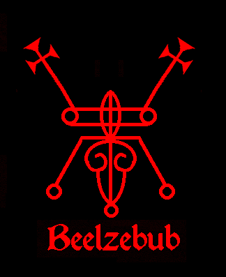
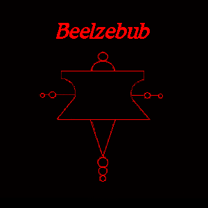
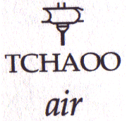
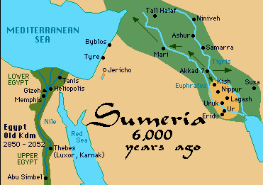
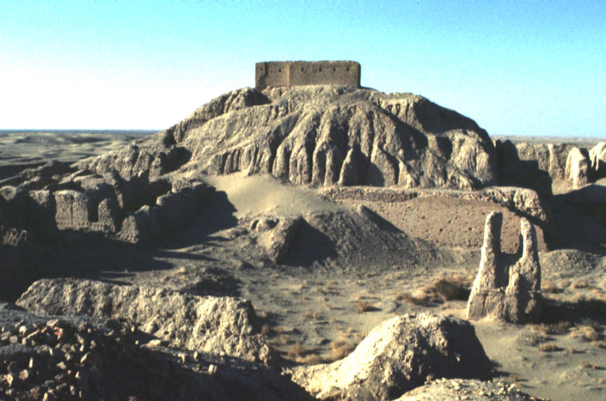
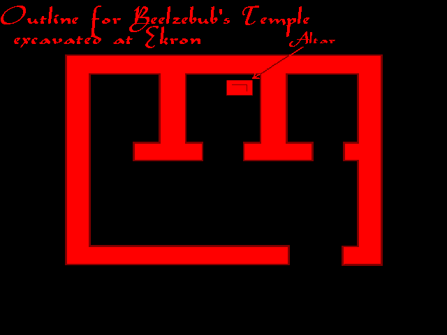

BEELZEBUB is also known as BAALZEBUB, ENLIL, BEL, "PIR BUB"* BAAL ZEBUL and BEELZEBUTH
He is also known as the Goetic Demon "BAEL"
- Zodiac Position: 0-4 Degrees of Aries
- March 21st-25th *[March 21-30]
- Tarot Card: 2 of Rods [From Azazel]
- Candle color: Black
- Plant: Fern
- Planet: Sun [From Azazel]
- Metal: Iron *[Gold]
- Element of Fire
- Rank: King
- Bael is a Day Demon and rules over 66 legions of spirits.
Those who are close to Beelzebub know he is Enlil. This is from him personally. Enlil was the original "Bel" which later evolved into "Baal." "Baal" means "Lord," "Master" "Baal the Prince." Beelzebub/Enlil was a very popular and well-known God who had cities named after him with the prefix "Baal" all over the Middle East.
Most people who have studied the occult know he is very close to Satan and they both go back to the "beginning of time" here on earth; Enlil and Enki. He is Father Satan's half-brother. Along with his brother Ea/Satan and Astaroth, he wound up in the grimoires as one of the Crowned princes of Hell and was labeled as "evil," as were our other Pagan Gods.
"Baal Zebub, the Healing God of Ekron, later became one word--Beelzebub--which came to represent evil and idolatry in the New Testament of the Bible."
-Excerpt taken from- "Syria" by Coleman South, 1995
Beelzebub is best known as the God of the Philistines,
He ruled over the city of Ekron. He is second in command to Satan. The Ancient Philistines worshiped Him under the
name "Baalzebub." Beelzebub is "Lord over all that Flies". Wherever he was worshipped, he was known as God of the weather and meteorology. He also controlled the
airways when the Nephilim came to Earth. His name was perverted by the Hebrews to mean "Lord of the Flies."
Beelzebub takes care of in-fighting
between dedicated Satanists. Satan wants unity and Beelzebub enforces this. He
can be very strict as Satan does not approve of dedicated Satanists cursing each
other.
Beelzebub is the Patron of all of the Orient [Far East], Martial Arts
and Asian Culture. He was Prince of the Seraphim and He has a raspy voice.
My experience- I saw him for the first time when I asked for his assistance in creating this webpage about him. He appeared to me with platinum blond hair and darker eyebrows, wearing a white robe. This was the first time I saw him. I heard his voice a long time ago and it was raspy, but when he spoke to me recently, the raspiness was gone. This is probably because he is now free.
- High Priestess Maxine
Beelzebub's Sigils:
|  |  |
{kind=link}
{kind=link}
|  | The Egyptian hieroglyph for "air" and "wind" is very similar to one of Beelzebub’s Sigils. The evolution here is obvious. My point is Beelzebub is "Prince of the Air." I find it sickening how the enemy has denigrated our Gods and claimed Beelzebub is "Lord of the Flies." Many Jewish written grimoires have illustrations of ugly flies for Beelzebub, along with their monstrous images for our other Gods. |
Along with Jewish and Christian destruction of ancient knowledge, nearly all knowledge about Beelzebub was lost. Christians were at liberty to blaspheme, malign and slander the reputations of the Original Gods any way they saw fit. Since there was no opposition left following the razing of cities, mass murder of "Heathen" peoples, destruction of their temples, libraries and records, new generations had no other sources to turn to for information other than the Judeo/Christian bible concerning these Gods.
Beelzebub/Enlil, was the Patron God of Nippur, a city in Sumeria which is now
present day Iraq.

Beelzebub had his ziggurats, shrines and temples located in his city,
Nippur. Below are photos of the remnants of his temple. The fortress on top of
the mound was built by American excavators in the 1890's "to protect them from
the local tribes." Beneath is the Great Ziggurat of Nippur and Temple of
Enlil:

Beelzebub/Enlil is the God of storms, atmospheric conditions, the wind, the
rain and the element of air. He is also the God of Entomancy. Entomancy is a method of divination by interpreting the behavior of insects. Beelzebub is also a Master of Astrology and the Zodiac.
His number is 50
His ziggurat of Nippur was called, "Fi-irn-bar-sag." He is the God who hurls his thunderbolts and lightning against the enemies of Satan. [More than one Christian church has met with disaster on occasion]. He is considered to be a gracious life-giving and life-sustaining God, taking care of his people, the beasts of the field, the fowls of heaven and the fishes of the sea. "Enlil [Beelzebub] is both a God of war and God of peace; a destroyer and protector, defender, restorer, upbuilder; inimical, hostile and most gracious." ¹
To enjoy his blessings one must enter into the right relationship with him and Satan. He carries out and enforces Satan's decrees.
"Enlil [Beelzebub] is neither afraid nor stands in dread of an enemy. A
battle undertaken by him is pursued with unrelenting vigor till it is carried to
its victorious end-- with him there is no pardon nor retreat:
The hostile
not subservient land- from that land thy breast thou dost not turn.
If his
anger is once aroused, there is no one who could induce him to leave or cool
off."²
Enlil/Beelzebub was a "protector and life-giver." "As furious and destructive Enlil may be in his dealings with the enemies, as gracious, kind and loving he can be when his own people and country are concerned. He protects his people from hostile invasions by surrounding them and their home with a high wall or by becoming for them a fastness or house, the bolts of which he fastens securely so that the hostile hordes can neither climb over or overcome it nor can enter through its gates."
"If his people are in need of rain, he opens the gates of heaven, pulls back its bars, loosens its fastenings, removes its bolts that abundant rains may water their fields; or he may do this to drown and utterly destroy the enemy."
Below is an Ancient Sumerian hymn to Enlil/Beelzebub:³
The gate[s] of heaven
The bars of heaven
The fastenings of heaven
The bolts of heaven
Thou openest
Thou pullest back
Thou
loosenest
Thou removest
"He sustains the life of both man and beast. In doing so, he does not neglect even the smallest and most insignificant who maketh to sprout, the grain art thou."
The ancient Babylonians were amazed at Enlil's loving kindness, protection and support, praising him by exclaiming "He who protects [gives support]."
Endowed with extraordinary powers and authority. The emblem of his authority is a pure or bright scepter which he carries or holds in his hands or wields. He acts on the authority of Satan. This bright scepter is, however, not merely an emblem of authority, power and might, but also a stylus in the hand of Beelzebub, the scribe, by means of which he writes the will and enters the decisions of Satan.
"The twelve signs of the zodiac, the year, seasons, months and signs of the
zodiac have each and all their beginning and end, their boundaries or outlines,
their pictures or drawings: Enlil [Beelzebub] indicates and proclaims them.
There is a meaning and significance to each and all of them: Enlil [Beelzebub]
interprets them. This he does by the 'fullness of his
manifestations.' 'Enlil and His Seven Manifestations.' It is one of the most remarkable facts
in connection with the nature of every god who, at one time or another, played the
role of the “Son” in a given trinity, that such a god was considered to have “seven
manifestations” of his powers.' 'Seven' they were, because
this number expresses the 'fullness, completeness, totality.'"4
*These are the chakras
Below is a diagram of Beelzebub's Temple at Ekron in Ancient Philistia:

*Beelzebub was known as "Pir Bub" to the Yezidi Devil Worshippers of Iraq.
They claim he was the God of King Ahab. [Reference: Devil Worship 1919 by
Isya Joseph, page 40]
The following is an Excerpt from “Encyclopaedia Biblica; a Critical Dictionary of the Literary, Political and Religious History, the Archaeology, Geography, and Natural History of the Bible"
Volume I : A-D
by The Rev. T. K. Cheyne, M.A., DD
and
J. Sutherland Black, M.A. LL.D.
New York, The Macmillan Company; London: Adam and Charles Black, 1899
"BAALZEBUB taking Zebub or Myla as the name Fly-God, a God of Ekron, whose oracle was consulted by Ahaziah king of Israel in his last illness. The name is commonly explained “Lord of Flies.” True, there is no Semitic analogy for this but Pausanias tells us of a God who drove away dangerous swarms of flies from Olympia, and Clement of Alexandria attests the cult of the same God in Elis and we may, if we will, interpret the title “A God who sends as well as removes a plague of flies.” Let us however, look farther. Bezold thought that in an Assyrian inscription of the 12th cent. B.C.E. “Baal-Zabnbi” was the name of the one of Zebub. Baal-Zebub was a widely known divine name, adopted for the God of Ekron. The restoration of the final syllable, however, is admittedly quite uncertain, and the reading Baal-Sapuna [see BAAL-ZEPHON, I] seems much more probable. Winckler, therefore, suggests that Zebub might be some very ancient name of a locality in Ekron [no longer to be explained etymologically], on the analogy of Baal-Sidon, Baal-Hermon, Baal- Lebanon. No such locality, however, is known, and Ekron, not any locality in Ekron, was the territory of the Baal. It is, therefore, more probable that Baal-Zebub, “Lord of Flies” [which occurs only in a very late narrative, one which has a pronounced didactic tendency], is a contemptuous uneuphonic Jewish modification of the true name, which was probably Baal-Zebul, 'Lord of the High House.'"
"This is a title such as any God with a fine temple might bear, and was probably not confined to the God of Ekron. 'High house' would at the same time refer to the dwelling-place of the Gods 'mountain of assembly' in the far North. There is some reason to think that the Phoenicians knew of such a dwelling-place. The conception is implied in the divine name Baal-Saphon, 'Lord of the North' [see BAAL-ZEPHON], and in the Elegy on the king of Tyre [Ezekiel 28 ]; and the Philistines probably knew of it. At any rate, the late Hebrew narrator or, if we will, an early scribe may have resented the application of such a title as 'Lord of the high house' [which suggested to him either Solomon's temple or the heavenly dwelling of Yahwi, to the Ekronite God, and changed it to 'Lord of flies,' Baal-Zebub. This explanation throws light on three proper names,- JEZEBEL, ZEBUL, and ZEBULON, 'from thy [high house] of holiness and glory.' The same term could be applied to the mansion of the moon in the sky."
References:
¹ Sumerian Hymns and Prayers to God Nin-Ib from the Temple Library of Nippur
by Hugo Radau
Philadelphia Published by the Department of Archeology, University of Pennsylvania 1911; Page 21
² Ibid, Page 23
³ Ibid Page 25
4 Ibid Page 27

Back to High Ranking Gods and Crowned Princes of Hell
© Copyright 2004, Joy of Satan Ministries;
Library of Congress Number: 12-16457